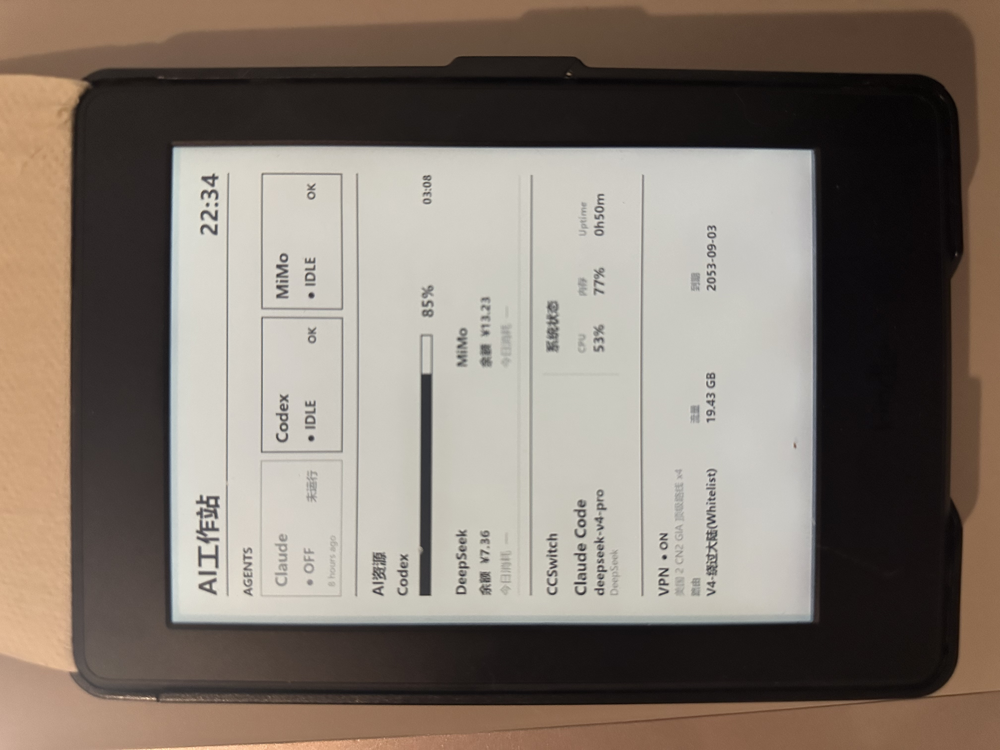

01
上下文记忆
Context Memory
记住你的项目、偏好与思考脉络，让每次对话都从“上次停下的地方”开始。
ALWAYS IN CONTEXTPERSONAL AI WORKSTATION / 个人 AI 工作站
Kindle AI 工作站，把分散的资料、思考与行动，收束进一个安静、专注、真正属于你的 AI 工作空间。
Turn scattered inputs into focused momentum — a private AI workspace for thinking, creating, and getting things done.

你不需要再记住信息放在哪里。Kindle AI 会理解你的上下文，在正确的时刻，把相关资料、关键判断和下一步行动放到你面前。
You don't need to remember where everything lives. Kindle AI understands context and brings the right knowledge, decisions, and next steps into view.
查看核心能力 →记住你的项目、偏好与思考脉络，让每次对话都从“上次停下的地方”开始。
ALWAYS IN CONTEXT连接笔记、文件和网页，把碎片信息整理成可理解、可复用的知识网络。
MAKE CONNECTIONS从一个模糊念头开始，陪你发散、收敛、打磨，直到它变成值得执行的方案。
THINK OUT LOUD把结论转成清晰的任务与节奏，让“知道该做什么”真正走到“已经做完”。
MAKE IT REAL一个克制、低干扰的空间，只留下当下最重要的事。
DEEP WORK, BY DESIGN“
把注意力留给
真正重要的事。
Keep your attention for what truly matters.
留下你的联系方式，获取 Kindle AI 工作站产品介绍与体验信息。
Leave a note and get the Kindle AI Workstation product brief.